6.9 Der DK-Automat
Von der Grammatik $\hat{G}$ zu einem nichtdeterministischen endlichen Automaten
Um den $LR(0)$-Parser gemäß Algorithmus 6.8.7 zu implementieren, müssen wir den Test $\gamma \stackrel{?}\in \Front(G)$ durchführen und, falls die Antwort ja ist, die Blüte finden. Dies gelingt uns, indem wir die Grammatik $\hat{G}$ in einen endlichen Automaten umwandeln. Theorem 5.3.8 und die ihm vorhergehende Konstruktion zeigen, wie man das macht. Anstatt allerdings das Theorem als "black box" zu verwenden, gehen wir die Konstruktion anhand zweier fiktiver Produktion $X \rightarrow aBcDe$ und $X \rightarrow uVw$ Schritt für Schritt durch. Wir erkennen die Terminale $\Sigma = \{a,c,e,u,w\}$ und die Nichtterminale $N = \{X,B,D,V\}$. In $\dk{G}$ sind \{a,c,e,u,w,A,B,D,V\} alles Terminale, und die Nichtterminale sind $\dk{N} = \{\dk{X}, \dk{B}, \dk{D}, \dk{V}\}.$ Die Produktionen von $\hat{G}$ sind
$$
\begin{align*}
\dk{X}&
\rightarrow a\dk{B} \\ \dk{X}&\rightarrow a\dkt{B}c\dk{D} \\ \dk{X}
&\rightarrow a\dkt{B}c\dkt{D}e \\&\\ \dk{X}&\rightarrow u\dk{V}
\dk{X}&\rightarrow u\dkt{V}w
\end{align*}
$$
Diese übersetzen wir in einen verallgemeinert nichtdeterministischen Automaten, bei dem jede Kante mit einem Wort $\beta \in (\Sigma \cup N)^*$, also aus Terminalen der Grammatik $\dk{G}$ beschriftet ist:
Wir brechen die Kanten in Stücke, so dass jede mit genau einem Zeichen beschriftet ist:
Nochmal: jede Kante ist mit einem Terminalsymbol beschriftet. Die Symbole $B, D, V$ sind Terminale in der Grammatik $\dk{G}$. Wenn wir $\epsilon$ -Übergänge zulassen, können wir den Automaten übersichtlicher gestalten und mehrere Zustände zusammenfassen:
Wir werden uns noch bessere Namen für die Zwischenzustände ausdenken. Wenn wir uns an die Rechtsableitungsbäume mit Stamm, linkem Rand, Blüte und rechtem Rest erinnern, dann haben die Zwischenzustände eine klare Bedeutung: der Zustand $4$ oben zum Beispiel bedeutet, dass der Knoten $X$ im Stamm mit $a, B, c, D, e$ beschriftete Kinder hat und wir uns bereits entschieden haben, dass $a$, $B$ und $c$ Blätter sein sollen, also zum linken Rand gehören. Der Übergang $\boxed{4} \step{D} \boxed{5}$ entspricht dann der Entscheidung, auch $D$ zu einem Blatt zu machen, während $\boxed{4} \step{\epsilon} \dk{D}$ der Entscheidung entspricht, $D$ zu einem Knoten im Stamm zu machen und eine $D$-Produktion anzuwenden. Die beiden $\epsilon$-Übergänge von $\dk{X}$ nach $\boxed{1}$ bzw. $\boxed{7}$ stellen einfach sicher, dass wir uns erst entscheiden, mit welcher Produktion wir den Stammknoten $X$ expandieren, bevor wir weitermachen. Daher nennen wir Zustand $\boxed{4}$ um in $\boxed{X \rightarrow aBc.De}$, wobei der Punkt $.$ markiert, welchen Teil der rechten Seite wir bereits gelesen haben. Wir erhalten folgendes Bild:
Die $a^{m+k}b^m$-Grammatik
Wir illustrieren obige Vorgehensweise nun anhand der Grammatik
$$
\begin{align*}
G&: \\ S&\rightarrow aS \\ S&\rightarrow B \\ B&
\rightarrow aBb \\ B&\rightarrow ab
\end{align*}
$$
Laut Gebrauchsanweisung aus dem letzten Teilkapitel hat die Grammatik $\dk{G}$ die Terminalsymbole $\Sigma \cup N = \{a, b, S, B\}$ und die Nichtterminale $\dk{N} = \{\dk{S}, \dk{B}\}$. Die Produktionen von $\dk{G}$ ergeben sich wie folgt:
$$
\begin{align*}
\begin{array}{l|l} \textnormal{Produktion in $G$}&
\textnormal{Produktion in $\hat{G}$} \\ \hline % % S \rightarrow aS&
{\dk{S}} \rightarrow \dkt{a} \dk{S}\\&{\dk{S}} \rightarrow \dkt{a}
\dkt{S}\\ \hline % S \rightarrow B&{\dk{S}} \rightarrow \dk{B}\\&
{\dk{S}} \rightarrow \dkt{B}\\ \hline % B \rightarrow aBb&{\dk{B}}
\rightarrow \dkt{a}\dk{B}\\&{\dk{B}} \rightarrow
\dkt{a}\dkt{B}\dkt{b}\\ \hline % B \rightarrow ab&{\dk{B}} \rightarrow
\dkt{ab} \end{array}
\end{align*}
$$
In dieser Grammatik betrachten wir die Rechtsableitung
$$
\begin{align*}
S \Step{} aS \Step{} aaS \Step{} aaB \Step{} aaaBb
\Step{} aaaaBbb \Step{} aaaaaBbbb
\end{align*}
$$
Es gilt $\front(aaaaaBbbb) = aaaaaBb$. In $\hat{G}$ entspricht die obige Rechtsableitung der Ableitung
$$
\begin{align*}
\hat{S} \Step{} a\hat{S} \Step{} aa\hat{S} \Step{}
aa\hat{B} \Step{} aaa\hat{B} \Step{} aaaaBb
\end{align*}
$$
Den nichtdeterministischen DK-Automaten (mit $\epsilon$ -Übergängen) können wir nun Schritt für Schritt zeichnen:
Der nichtdeterministische DK-Automat
Definition 6.9.1 Für eine kontextfreie Grammatik ist der nichtdeterministische DK-Automat (NDK-Automat) ein nichtdeterministischer endlicher Automat mit $\epsilon$ -Übergängen, den wir wie folgt konstruieren:
-
Für jede Produktion $X \rightarrow \beta$ gibt es einen Zustandsübergang $\boxed{X} \step{\epsilon} \boxed{X \step{} . \beta}$
-
Für jede Zerlegung $\beta = \beta_1 \sigma \beta_2$ gibt es den Zustandsübergang $\boxed{X \step{} \beta_1 . \sigma \beta_2} \step{\sigma} \boxed{X \step{} \beta_1 \sigma . \beta_2}$
-
Falls $\sigma$ ein Nichtterminal $Y$ ist, also $\beta = \beta_1 Y \beta_2$, gibt es zusätzlich noch den Übergang $\boxed{X \step{} \beta_1 . Y \beta_2} \step{\epsilon} \boxed{Y}$
Die Interpretation dieser Übergänge in Rechtsableitungsbaum-Begriffen ist: (1) heißt, dass $\boxed{X}$ ein Stammknoten ist und wir ihn anhand der Regel $X \rightarrow \beta$ expandieren; wir erschaffen also Kinder, die mit den Symbolen von $\beta$ beschriftet sind. (2) heißt, dass wir uns bereits entschieden haben, die Kinder $\beta_1$ von $\boxed{X}$ nicht zu expandieren, sie also zum linken Rand werden zu lassen, und diese Entscheidung nun auch für das Symbol $\sigma$ treffen; (3) bedeutet, dass wir uns entschließen $\sigma$ (das hier ein Nichtterminal $Y$ ist) weiter zu expandieren, es also nicht dem linken Rand zuordnen, sondern zu einem Stammknoten werden lassen, uns aber noch nicht entschlossen haben, welche Produktion $Y \rightarrow ?$ wir anwenden wollen. Der Startzustand ist $\boxed{S}$. Jeder Zustand der Form $\boxed{X \step{} \beta .}$ ist ein akzeptierender Zustand.
Den NDK-Automaten deterministisch machen
Wir wissen ja bereits, wie man einen nichtdeterministischen Automaten deterministisch macht: die Potenzmengenkonstruktion aus Kapitel 5.3.7. Hier können wir diese leider nicht direkt anwenden, da der obige Automat $\epsilon$ -Übergänge hat. Wie geht das also nun? Im deterministischen Automaten ist wie bei der Potenzmengenkonstruktion jeder Zustand eine Menge $R$ von Zuständen des nichtdeterministischen Automaten. Wenn wir nun in eine solche Menge $R$ einen Zustand $q$ einfügen, dann fügen wir auch alle Zustände $q'$ hinzu, zu denen es einen $\epsilon$ -Übergang $q \step{\epsilon} q'$ gibt. Für den obigen nichtdeterministischen Automaten sieht das dann so aus:

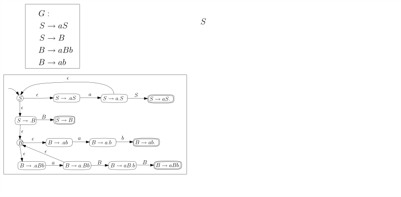
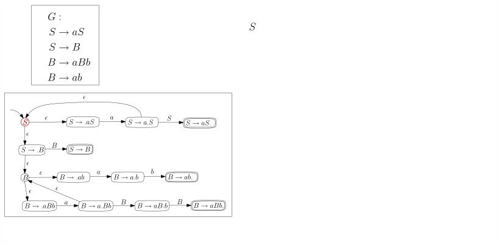
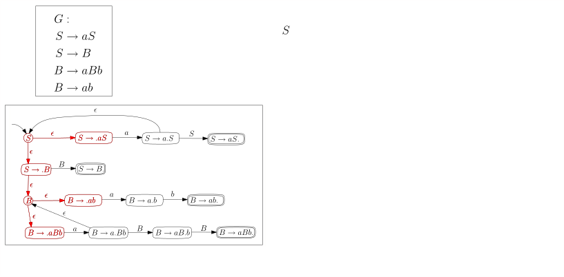
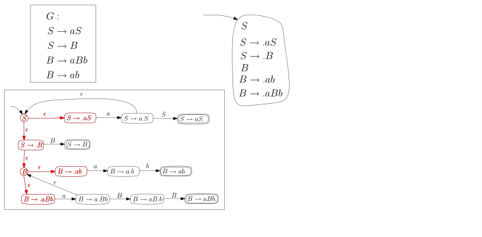
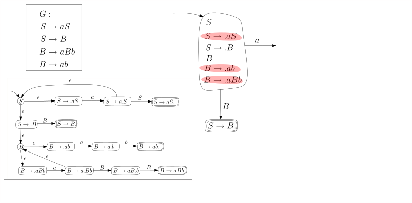
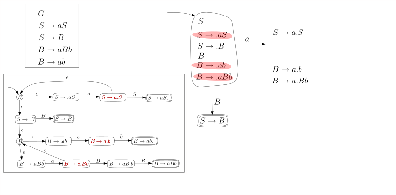
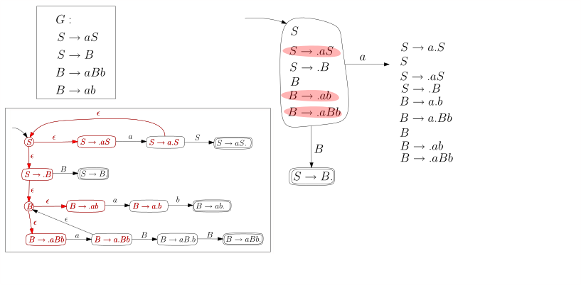

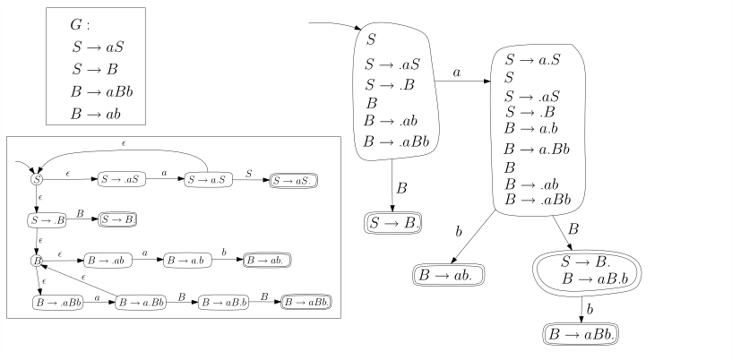
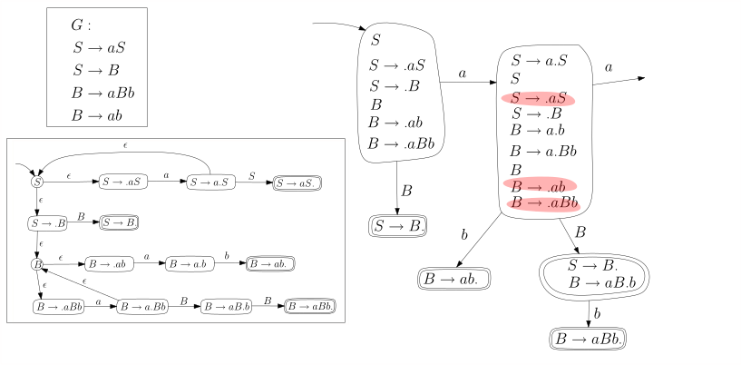
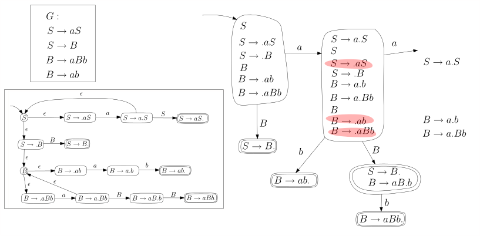
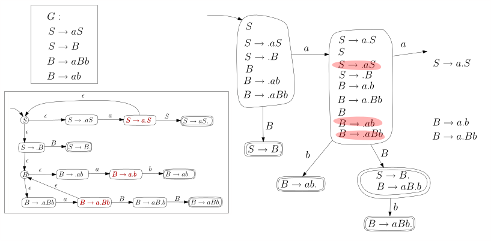
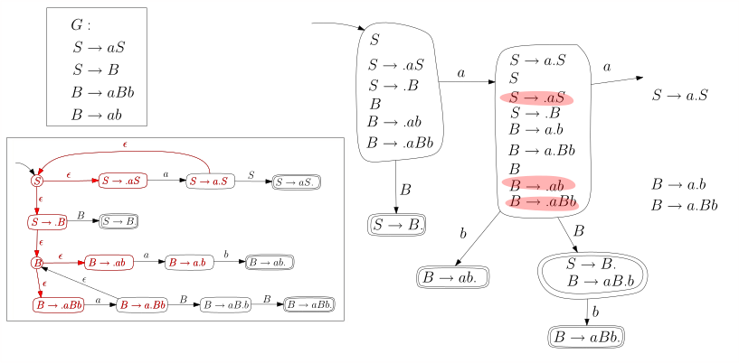

Und hier nochmal das Endergebnis, wobei wir die Zustände im DK-Automaten durchnummeriert haben:
Streng genommen ist das Ergebnis kein deterministischer Automat, da zum Beispiel der Startzustand keinen $b$-Übergang hat. Die Zustandsübergangsfunktion $\delta: Q \times \Sigma \rightarrow Q$ ist gar keine Funktion, sondern eine partielle Funktion, da $\delta(q,\sigma)$ für manche Eingabewerte undefiniert ist. Wir verwenden aber die Konvention, dass der Automat in diesem Falle in einen Todeszustand wechselt, aus dem er nicht wieder herauskommt und der nicht akzeptierend ist. Dies ist übersichtlicher, als überall Todeskanten hinzuzufügen.
Den DK-Automaten verwenden
Theroem 6.9.2 (DK-Test). Sei $G$ eine kontextfreie Grammatik ohne nutzlose Nichtterminale und ei $M$ der DK-Automat für die Grammatik $G$. Die Grammatik $G$ ist LR(0) genau dann, wenn folgende zwei Bedingungen gelten:
-
(DK.1) Ein akzeptierender Zustand von $M$ (der ja eine Menge von Zuständen des NDK-Automaten ist) enthält genau einen akzeptierenden NDK-Zustand, also genau ein $\boxed{X \rightarrow \beta .}$
-
(DK.2) Wenn $q$ ein akzeptierender Zustand von $M$ ist und $q \step{\sigma} q'$, dann ist $\sigma$ ein Nichtterminal.
Wenn diese beiden Bedingungen gelten, sagen wir, dass $G$ den DK-Test bestanden hat. Das Theorem sagt also: $G$ ist LR(0) genau dann, wenn es den DK-Test besteht.
Beweisskizze. Wir erinnern den Leser noch einmal an die alternative Charakterisierung von LR(0)-Sprachen, nämlich :
Lemma 6.7.6, noch einmal (LR(0), äquivalente Formulierung). Eine Grammatik $G$ ist LR(0) genau dann, wenn für alle korrekten Linksreduktionsschritte $\alpha \beta w \rstep{} \alpha Xw$ und $\alpha' \beta' w' \rstep{} \alpha' X'w'$ gilt:
-
Falls $\alpha \beta = \alpha' \beta'$ dann auch $\beta = \beta'$ und $X= X'$; in Worten: wenn die Fronten identisch sind, dann auch die Reduktionsschritte.
-
Wenn $\alpha' \beta' = \alpha \beta \varphi$ und $|\varphi| \geq 1$, dann $\varphi \not \in \Sigma^*$; in Worten: wenn $\front(\gamma)$ ein echter Präfix von $\front(\gamma')$ ist, dann muss in dem überstehenden Teil von $\front(\gamma)$ mindestens ein Nichtterminal vorkommen.
Es ist nicht schwer zu sehen, dass (DK.1) äquivalent zu Punkt 1 des Lemmas ist. Wenden wir uns (DK.2) und Punkt 2 zu. Wenn Punkt 2 nicht gilt, dann gibt es korrekte Reduktionsschritte
$$
\begin{align*}
\alpha \beta w \rstep{} \alpha X w \\ \alpha \beta
\sigma w' = \alpha' \beta' w' \rstep{} \alpha' X' w'
\end{align*}
$$
Wenn wir dem Automaten den Präfix $\alpha \beta$ füttern, bringt er uns in einen Zustand, der die $\boxed{X \rightarrow \beta.}$ enthält, da $\alpha \beta$ ja eine Front ist. Dieser Zustand muss allerdings einen Übergang haben, der mit $\sigma$ gelabelt ist, dem ersten Zeichen von $\varphi$, da ja $\alpha \beta \sigma$ ein Präfix der Front $\alpha' \beta'$ ist. Somit gilt (DK.2) nicht. Wenn umgekehrt (DK.2) nicht gilt, dann gibt es einen akzeptierenden Zustand $q$ (der also $\boxed{X\rightarrow \beta.}$ enthält) und eine ausgehende Kante $q \step{\sigma} q'$ mit einem Terminal $\sigma$.
Übungsaufgabe 6.9.1 Zeigen Sie: wenn $G$ keine nutzlosen Nichtterminale hat, dann gibt es im NDK-Automaten für jeden Zustand $q$ eine Übergangsfolge $q \steps{v} q'$ zu einem akzeptierenden Zustand $q'$, wobei $v$ ausschließlich aus $G$ -Terminalen besteht, also $v \in \Sigma^*$. Zeigen Sie das selbe für den DK-Automaten.
Es gibt also einen Weg $q \step{\sigma} q' \steps{v} q''$ für $v \in \Sigma^*$ und einen akzeptierenden Zustand $q''$. Es sind also sowohl $\alpha \beta$ als auch $\alpha \beta \sigma v$ Fronten von $G$, und $\sigma v$ besteht nur aus Terminalen. Das heißt, dass Punkt 2 der Schlussfolgerung nicht gilt.A\(\square\)
LR(1)-Grammatiken
Hier ist der nichtdeterministische Automat für $G$ mit Lookahead 1.
Jetzt machen wir den Automaten deterministisch: